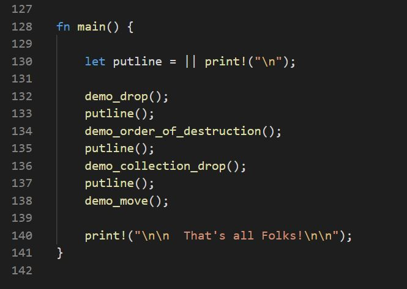

Rust Bites: LifeCycle
Creation, drop, order of destruction, move
| default constructor provides object with default state | |
| parameterized constructdor provides object with program supplied state | |
| clone function, e.g., copy constructor makes a new object that is a copy of cloned | |
| drop function, e.g., destructor, releases resources held by object when it goes out of scope | |
| value getter returns object's state |
Test Code
 |
 |
Demonstrate Creation and Drop
 |
 |
Demonstrate Order of Destruction
 |